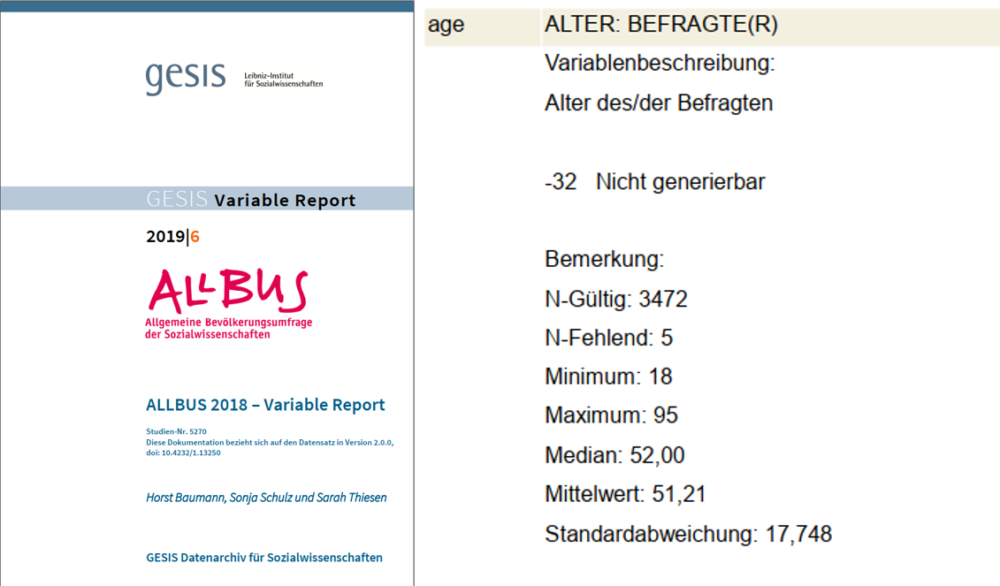

2 Arbeiten mit Datensätzen in Stata
Nachdem wir uns in Stata etwas umgesehen haben, können wir uns jetzt dem eigentlichen Arbeiten mit Datensätzen zuwenden.
2.1 Vorab: Befehlsstruktur & Hilfe
Ganz nebenbei haben wir in Kapitel 1 bereits die ersten Stata-Befehle verwendet. Bevor wir jetzt aber tiefer einsteigen nochmal einmal allgemein:
Die grundsätzliche Struktur von Stata-Kommandos ist immer befehl variable, optionen. Zunächst geben wir also immer an, was passieren soll - bisher war das eben zum Beispiel eine Beschreibung (describe) einer Variable:
'200set' found where integer expected
r(198);
storage display value
variable name type format label variable label
----------------------------------------------------------------------------------------------------
sex byte %12.0g sex GESCHLECHT, BEFRAGTE(R)Diese können wir mit der Option simple abändern. Optionen werden nach einem , angegeben:
'200set' found where integer expected
r(198);
sexBefehle ohne Variable beziehen sich immer auf den gesamten Datensatz, bei describe bekommen wir damit dann eine Übersicht zum Datensatz:
'200set' found where integer expected
r(198);
Contains data from D:\oCloud\Home-Cloud\Lehre\Methodenseminar\Allbus2018.dta
obs: 3,477 ALLBUS 2018
vars: 708 28 Mar 2019 16:09
size: 3,431,799
Sorted by: Mit help bekommen wir eine Hilfeseite angezeigt, hilfreich sind dabei vor allem die Beispiele ganz unten:

Kommandos in Stata sind zeilenbasiert. D.h. alles was zu einem Kommando gehört, muss in der gleichen Zeile stehen. Umgekehrt wird auch alles, was in einer Zeile steht als Teil des Kommandos verstanden:
'200set' found where integer expected
r(198);
storage display value
variable name type format label variable label
--------------------------------------------------------------------------------
pv01 byte %12.0g pv01 BEFR.: WAHLABSICHT BUNDESTAGSWAHL
age byte %12.0g age ALTER: BEFRAGTE(R)
sex byte %12.0g sex GESCHLECHT, BEFRAGTE(R)Funktioniert nicht:
'200set' found where integer expected
r(198);
storage display value
variable name type format label variable label
--------------------------------------------------------------------------------
pv01 byte %12.0g pv01 BEFR.: WAHLABSICHT BUNDESTAGSWAHL
age byte %12.0g age ALTER: BEFRAGTE(R)
unrecognized command: sex
r(199);
end of do-file
r(199);Mit /// können wir Zeilen verknüpfen:
'200set' found where integer expected
r(198);
storage display value
variable name type format label variable label
--------------------------------------------------------------------------------
pv01 byte %12.0g pv01 BEFR.: WAHLABSICHT BUNDESTAGSWAHL
age byte %12.0g age ALTER: BEFRAGTE(R)
sex byte %12.0g sex GESCHLECHT, BEFRAGTE(R)Außerdem können wir mit // Kommentare in unsere DoFiles einfügen. // blendet alles folgende am Ende der Zeile aus:
'200set' found where integer expected
r(198);
storage display value
variable name type format label variable label
--------------------------------------------------------------------------------
pv01 byte %12.0g pv01 BEFR.: WAHLABSICHT BUNDESTAGSWAHL
age byte %12.0g age ALTER: BEFRAGTE(R)
sex byte %12.0g sex GESCHLECHT, BEFRAGTE(R)/// kann auch zum Kommentieren verwendet werden:
'200set' found where integer expected
r(198);
storage display value
variable name type format label variable label
--------------------------------------------------------------------------------
pv01 byte %12.0g pv01 BEFR.: WAHLABSICHT BUNDESTAGSWAHL
age byte %12.0g age ALTER: BEFRAGTE(R)
sex byte %12.0g sex GESCHLECHT, BEFRAGTE(R)2.2 Auszählen & Überblick erhalten
Mit tabulate bekommen wir eine Auszählung der Ausprägungen einer Variable. Dies ist wohl der wichtigste Befehl in Stata:
'200set' found where integer expected
r(198);
GESCHLECHT, |
BEFRAGTE(R) | Freq. Percent Cum.
------------+-----------------------------------
MANN | 1,773 50.99 50.99
FRAU | 1,704 49.01 100.00
------------+-----------------------------------
Total | 3,477 100.00Wir sehen hier also, dass sex zwei Ausprägungen hat und 1773 Männer und 1704 Frauen enthält.
Für metrisch skalierte Variablen mit deutlich mehr Ausprägungen können wir tabulate zwar theoretisch auch verwenden, allerdings wird eine Tabelle hier sehr schnell sehr unübersichtlich:
'200set' found where integer expected
r(198);
ALTER: |
BEFRAGTE(R) | Freq. Percent Cum.
------------------+-----------------------------------
NICHT GENERIERBAR | 5 0.14 0.14
18 | 26 0.75 0.89
19 | 37 1.06 1.96
20 | 34 0.98 2.93
21 | 34 0.98 3.91
22 | 33 0.95 4.86
23 | 33 0.95 5.81
24 | 31 0.89 6.70
25 | 46 1.32 8.02
26 | 43 1.24 9.26
27 | 51 1.47 10.73
28 | 52 1.50 12.22
29 | 55 1.58 13.81
30 | 39 1.12 14.93
31 | 54 1.55 16.48
32 | 50 1.44 17.92
33 | 49 1.41 19.33
34 | 51 1.47 20.79
35 | 64 1.84 22.63
36 | 58 1.67 24.30
37 | 54 1.55 25.86
38 | 51 1.47 27.32
39 | 41 1.18 28.50
40 | 51 1.47 29.97
41 | 41 1.18 31.15
42 | 43 1.24 32.38
43 | 52 1.50 33.88
44 | 56 1.61 35.49
45 | 52 1.50 36.99
46 | 48 1.38 38.37
47 | 50 1.44 39.80
48 | 74 2.13 41.93
49 | 65 1.87 43.80
50 | 65 1.87 45.67
51 | 79 2.27 47.94
52 | 72 2.07 50.01
53 | 69 1.98 52.00
54 | 78 2.24 54.24
55 | 84 2.42 56.66
56 | 74 2.13 58.79
57 | 68 1.96 60.74
58 | 76 2.19 62.93
59 | 62 1.78 64.71
60 | 74 2.13 66.84
61 | 62 1.78 68.62
62 | 60 1.73 70.35
63 | 53 1.52 71.87
64 | 60 1.73 73.60
65 | 62 1.78 75.38
66 | 66 1.90 77.28
67 | 78 2.24 79.52
68 | 70 2.01 81.54
69 | 56 1.61 83.15
70 | 46 1.32 84.47
71 | 39 1.12 85.59
72 | 26 0.75 86.34
73 | 47 1.35 87.69
74 | 38 1.09 88.78
75 | 39 1.12 89.91
76 | 42 1.21 91.11
77 | 40 1.15 92.26
78 | 43 1.24 93.50
79 | 33 0.95 94.45
80 | 39 1.12 95.57
81 | 22 0.63 96.20
82 | 27 0.78 96.98
83 | 18 0.52 97.50
84 | 17 0.49 97.99
85 | 16 0.46 98.45
86 | 5 0.14 98.59
87 | 11 0.32 98.91
88 | 14 0.40 99.31
89 | 9 0.26 99.57
90 | 4 0.12 99.68
91 | 1 0.03 99.71
92 | 7 0.20 99.91
94 | 2 0.06 99.97
95 | 1 0.03 100.00
------------------+-----------------------------------
Total | 3,477 100.00Für metrische Variablen empfiehlt sich daher summarize als Überblicksbefehl:
Hier bekommen wir die Anzahl der Beobachtungen (Obs.), das arithmetische Mittel (Mean), sowie die Minimal- und Maximalwerte ausgegeben (Min&Max). (zur Standardabweichung Std. Dev. kommen wir noch).
'200set' found where integer expected
r(198);
Variable | Obs Mean Std. Dev. Min Max
-------------+--------------------------------------------------------
age | 3477 51.5568 17.91249 -32 95summarize klappt auch mit mehreren Variablen auf einmal:
'200set' found where integer expected
r(198);
Variable | Obs Mean Std. Dev. Min Max
-------------+--------------------------------------------------------
age | 3477 51.5568 17.91249 -32 95
inc | 3477 1620.798 1374.651 -50 180002.3 Neue Variablen erstellen
Natürlich sind wir nicht nur darauf beschränkt, bestehende Variablen anzusehen, sondern wir können auch neue Variablen erstellen. Das geht mit gen. Dazu geben wir erst den neuen Variablennamen an und nach =, wie die neue Variable bestimmt werden soll:
'200set' found where integer expected
r(198);
Variable | Obs Mean Std. Dev. Min Max
-------------+--------------------------------------------------------
age_mon | 3477 618.6816 214.9499 -384 1140Wenn wir eine Variable überschreiben möchten, dann müssen wir diese erst mit drop löschen, bevor wir sie überschreiben. Würden wir den gen Befehl von gerade nochmal verwenden, dann bekommen wir eine Fehlermeldung:
'200set' found where integer expected
r(198);
age_mon already defined
r(110);
end of do-file
r(110);Wir müssen den Namen age_mon also erst wieder frei machen, dann funktioniert der Befehl auch:
2.4 Bestehende Variablen verändern
Alternativ können wir auch mit replace explizit eine bestehende Variable überschreiben:
Hier können wir aber nur bestehende Variablen ansprechen, sonst bekommen wir auch hier eine Fehlermeldung:
'200set' found where integer expected
r(198);
variable age_mon12 not found
r(111);
end of do-file
r(111);2.5 gen ist gut, Kontrolle ist besser
Wie gerade gesehen gibt uns Stata aber keinerlei Erfolgsmeldungen. Nach der Bearbeitung oder Neuurstellung von Variablen sollte ein Blick in die Daten folgen. Dazu empfiehlt es sich, wieder auf den browse Befehl zurückzugreifen:

2.6 Fehlende Werte
Wenn wir uns nochmal die Variable age ansehen, dann fallen die negativen Altersangaben ins Auge:
'200set' found where integer expected
r(198);
Variable | Obs Mean Std. Dev. Min Max
-------------+--------------------------------------------------------
age | 3477 51.5568 17.91249 -32 95Ein Blick ins Codebuch zeigt, dass es sich hier natürlich nicht um Befragte mit einem negativen Alter handelt. Sondern aufgrund der fehlenden Angaben zum Geburtsdatum lässt sich für manche Befragte das Alter nicht generieren. Für diese Fälle wurde dann -32 als Wert in age abgelegt:

Diese Information müssen wir Stata mitteilen, indem wir -32 als missing value überschreiben. Diese missing values werden in Stata mit . abgelegt und werden dann für die Berechnung von Mittelwerten usw. ausgeschlossen. Um also -32 als . zu überschreiben, können wir zB auf den replace Befehl zurückgreifen:
'200set' found where integer expected
r(198);
Variable | Obs Mean Std. Dev. Min Max
-------------+--------------------------------------------------------
age | 3477 51.5568 17.91249 -32 95
(5 real changes made, 5 to missing)
Variable | Obs Mean Std. Dev. Min Max
-------------+--------------------------------------------------------
age | 3472 51.67713 17.64222 18 95Wir bekommen von Stata mitgeteilt, dass wir 5 Beobachtungen verändert und auf missing gesetzt haben. Im folgenden summarize werden diese fehlden Werte dann ignoriert.
Ein Spezialbefehl für die Überschreibung von bestimmten Werten ist mvdecode. Mit mvdecode können wir -32 und -10 in mehreren Variablen gleichzeitig als missing überschreiben. Zum Beispiel in dm03, dg03 und isced97:
'200set' found where integer expected
r(198);
dm03: 3002 missing values generated
dg03: 344 missing values generated
isced97: 23 missing values generatedMit mdesc bekommen wir eine Auszählung zu fehlenden Werten. mdesc ist allerdings kein Standard-Stata-Befehl, sondern muss extra installiert werden. Das ist allerdings kein größerer Aufwand:
Anschließend können wir mit mdesc die Zahl der missings in age, dm03, dg03 und isced97 ausgeben lassen:
'200set' found where integer expected
r(198);
Variable | Missing Total Percent Missing
----------------+-----------------------------------------------
age | 5 3,477 0.14
dm03 | 1 3,477 0.03
dg03 | 344 3,477 9.89
isced97 | 23 3,477 0.66
----------------+-----------------------------------------------2.7 if Bedingungen und fehlende Werte
Eine häufige Fehlerquelle bei fehlende Werten in Stata ist deren Verhältnis zu >. Fehlende Werte werden nämlich von Stata als “unendlich groß” gewertet! Wenn wir uns Befragte mit einem Alter über 92 ausgeben lassen, dann bekommen wir auch diejenigen ohne Altersangabe ausgegegeben:
+---------------------------+
| sex land age |
|---------------------------|
126. | MANN SACHSEN 94 |
322. | FRAU RHEINLAND-PF . |
353. | MANN NORDRHEIN-WE 94 |
556. | FRAU NORDRHEIN-WE . |
1342. | FRAU NORDRHEIN-WE . |
|---------------------------|
2135. | FRAU BRANDENBURG . |
3130. | MANN HESSEN . |
3299. | MANN RHEINLAND-PF 95 |
+---------------------------+Es gibt zwei Möglichkeiten, dies zu umgehen:
- entweder wir verwenden
inrange- wobei wir hier eine Obergrenze angeben müssen und außerdem die Untergrenze immer mit eingeschlossen wird. Wenn wir also nur Fälle sehen wollen, die älter als 92 sind, dann müssen wir einen Wert über 92 angeben:
+---------------------------+
| sex land age |
|---------------------------|
126. | MANN SACHSEN 94 |
353. | MANN NORDRHEIN-WE 94 |
3299. | MANN RHEINLAND-PF 95 |
+---------------------------+- oder wir hängen den
missing()-Operator an die Bedingung an. Wenn wir diesen mit Hilfe eines!verneinen, bekommen wir nur nicht-fehlende Fälle ausgegeben:
2.8 keep & drop
Manchmal möchten wir nur bestimmte Beobachtungen im Datensatz behalten. Beispielsweise möchten wir für eine Analyse nur Befragte mit einem Einkommen über 1500 EUR im Datensatz behalten. Dazu können wir keep oder drop die gewünschten Fälle behalten bzw. die ungewünschten ausschließen:
'200set' found where integer expected
r(198);
(1813 observations deleted)
Contains data from D:\oCloud\Home-Cloud\Lehre\Methodenseminar\Allbus2018.dta
obs: 1,664 ALLBUS 2018
vars: 708 28 Mar 2019 16:09
size: 1,642,368
Sorted by:
Note: dataset has changed since last saved '200set' found where integer expected
r(198);
(1813 observations deleted)
Contains data from D:\oCloud\Home-Cloud\Lehre\Methodenseminar\Allbus2018.dta
obs: 1,664 ALLBUS 2018
vars: 708 28 Mar 2019 16:09
size: 1,642,368
Sorted by:
Note: dataset has changed since last savedHinweis: wenn die negativen Werte für inc bereits als Missing überschrieben sind, verbleiben diese Fälle im Datensatz! (Sie werden als unendlich groß erkannt!)
2.9 Labels und if-Bedingungen
Genauso könnten wir auch vorgehen wenn wir nur männliche oder weibliche Befragte im Datensatz behalten möchten. Hier nochmal die Auszählung der Variable sex:
'200set' found where integer expected
r(198);
GESCHLECHT, |
BEFRAGTE(R) | Freq. Percent Cum.
------------+-----------------------------------
MANN | 1,773 50.99 50.99
FRAU | 1,704 49.01 100.00
------------+-----------------------------------
Total | 3,477 100.00Allerdings sind MANN und FRAU lediglich Variablenlabels. D.h. hier wurden Zahlencodes wieder mit Beschreibungen assoziiert. Wir können diese Labels nicht für if-Bedingungen verwenden:
type mismatch r(109);
Im Hintergrund ist sex nämlich eine numerische Variable
'200set' found where integer expected
r(198);
storage display value
variable name type format label variable label
------------------------------------------------------------------------------------------
sex byte %12.0g sex GESCHLECHT, BEFRAGTE(R)Unter value label sehen wir, dass hier das Label sex angefügt wurde.
Wir können die eigentlichen Werte in tabulate mit der Option ,nol ausblenden:
'200set' found where integer expected
r(198);
GESCHLECHT, |
BEFRAGTE(R) | Freq. Percent Cum.
------------+-----------------------------------
MANN | 1,773 50.99 50.99
FRAU | 1,704 49.01 100.00
------------+-----------------------------------
Total | 3,477 100.00Wenn wir also nach Frauen filtern möchten, müssen wir den entsprechenden Zahlencode angeben:
Mehr zu labels hier
2.10 Nochmal von vorne: Daten neu laden
Variable gelöscht, die doch nötig ist? Falsch recodiert? Das ist zwar ärgerlich, aber ein riesen Vorteil der DoFile-basierten Datenarbeit mit Stata ist die Reproduzierbarkeit. Wir können einfach nochmal von vorne anfangen. Dazu lesen wir die Original-Daten einfach erneut mit use ein. Allerdings ist dann eine Besonderheit zu beachten:
no; dataset in memory has changed since last saved
Wir müssen erst den existierenden Datensatz mit clear löschen
oder die clear Option für use verwenden:
2.11 Speichern
Natürlich können wir unsere Daten auch abspeichern, wenn alles wie gewünscht geklappt hat. Dafür gibt es den Befehl save, der analog zu use funktioniert. Wenn wir allerdings einfach wieder den Original-Datensatznamen angeben und in der Zwischenzeit Variablen erstellt oder gelöscht haben, dann bekommen wir folgende Fehlermeldung:
file Allbus2018.dta already exists
r(602);
Wir geben also entweder einen anderen Dateinamen an:
Wir können aber auch mit der Option replace explizit mitteilen, dass die Datei überschrieben werden soll:
Damit sind die Originaldaten aber natürlich weg.
2.12 Übungen 2
- Laden Sie den Datensatz
Allbus2018in Stata.- In welcher Variable ist das Geburtsjahr der Befragten abgelegt?
- Nutzen Sie
summaryfür einen Überblick. Hat die Altersvariable negative Werte, die Sie mit.ersetzen sollten? - Überschreiben Sie diese negativen Werte mit
., um sie so Stata kenntlich zu machen. - Erstellen Sie eine neue Variable mit dem Alter der Befragten im Jahr 2020!
- Lassen Sie sich das Geburtsjahr und die neu erstellte Variable für die ersten 20 Beobachtungen anzeigen - hat alles geklappt wie es soll?
- Wählen Sie alle Befragten aus, die nach 1960 geboren wurden und löschen Sie alle anderen aus dem Speicher.
- Wie viele Spalten hat der Datensatz nach dieser Veränderung? Wie viele Zeilen?
- Laden Sie den Datensatz
Allbus2018in Stata.- Lassen Sie sich mit Hilfe von
tabulatedie Variablegkpolanzeigen. - Lassen Sie sich die Zahlencodes anstelle der Labels anzeigen.
- Überschreiben Sie alle Codes für fehlende Angaben mit
. - Lassen Sie sich mit
tabulatedie Häufigkeitsauszählung erneut anzeigen. Hat sich die Fallzahl vorhin verändert? - Wie können Sie die fehlenden Werte auch in
tabulateauszählen lassen? Lassen Sie sich diese Auszählung anzeigen! - Löschen Sie alle Beobachtungen von Befragten aus Städten mit 500.000 Einwohnern und mehr aus dem Speicher.
- Kontrollieren Sie mit einem erneuten
tabulate-Befehl, ob alle Fälle weg sind. (Denken Sie an die fehlenden Werte!)
- Lassen Sie sich mit Hilfe von
- Kommentieren Sie ihre bisherigen Befehle mit
//! Was haben Sie jeweils gemacht? Probieren Sie auch aus, mit///einen Befehl über mehrere Zeilen zu verteilen!
2.13 Profi-Übungen 2
Für alle, die noch etwas mehr machen möchten:
- Laden Sie den Datensatz
Allbus2018in Stata.- Behalten Sie die Befragte, die zwischen 1970 und 1980 geboren wurden im Speicher!
- Unter welchem Variablennamen ist das Geburtsjahr abgelegt? Nutzen Sie
lookfor! - Wie hilft Ihnen
inrangehier weiter?